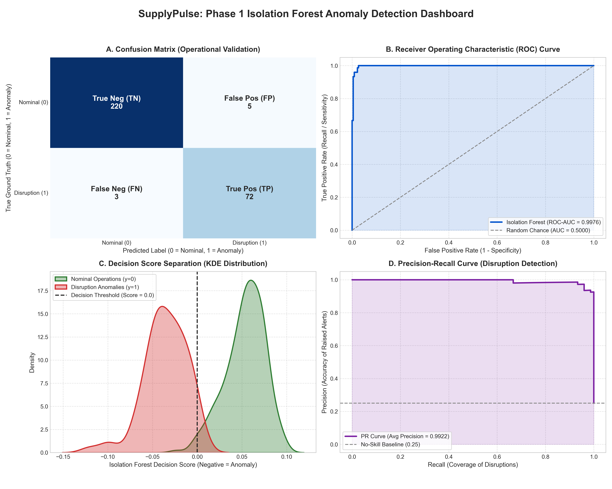
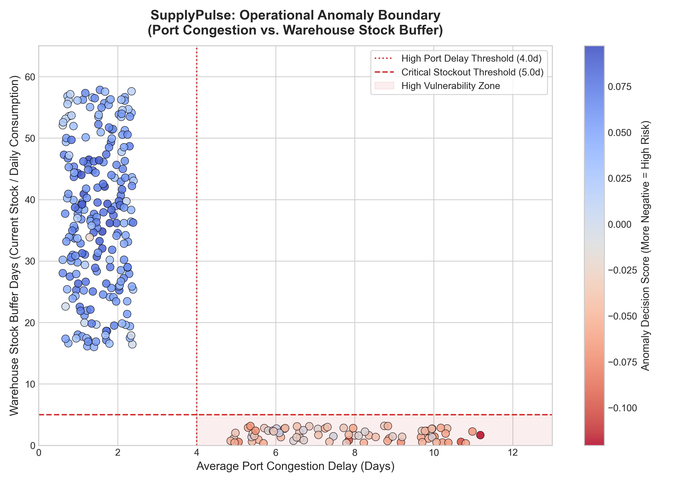
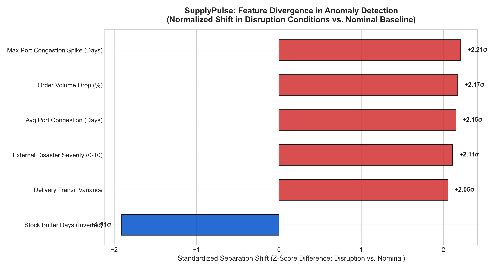

Model Accuracy
97.3%
Overall Accuracy
ROC-AUC Score
0.9976
Discriminative Power
Precision (Anomalies)
93.5%
Low False Alarms
Recall / Sensitivity
96.0%
Disruption Capture Rate
F1-Score
0.9474
Harmonic Mean
PR-AUC Score
0.9922
Avg Precision
Confusion Matrix Breakdown
| Metric Category |
Count (Samples) |
Operational Supply Chain Interpretation |
| True Positives (TP) |
72 |
Severe disruptions correctly flagged for proactive procurement intervention. |
| True Negatives (TN) |
220 |
Nominal supplier operations correctly identified without false alarms. |
| False Positives (FP) |
5 |
Nominal operations flagged as suspicious (Type I Error / False Warning). |
| False Negatives (FN) |
3 |
Disruptions missed by the model (Type II Error / Blind Spot). |
Figure 1: Master Performance Diagnostics Dashboard

Figure 1 Description: (A) Annotated Confusion Matrix; (B) Receiver Operating Characteristic (ROC) Curve displaying 0.9976 AUC; (C) Kernel Density Estimation (KDE) demonstrating separation between nominal operations and disruption anomalies; (D) Precision-Recall curve with average precision of 0.9922.
Figure 2: Operational Decision Boundary (Port Delay vs Stock Buffer)

Figure 2 Description: Continuous Isolation Forest decision score mapping across maritime transit port delays (X-axis) and warehouse inventory stock buffer days (Y-axis). Identifies the critical vulnerability corridor where delays > 4.0 days intersect buffers < 5.0 days.
Figure 3: Feature Divergence & Sensitivity Analysis

Figure 3 Description: Normalized standardized separation shift (σ) across all 6 engineered supply chain features. Illustrates how port congestion spikes, external disaster severity, and stock buffer depletion drive anomaly classification.